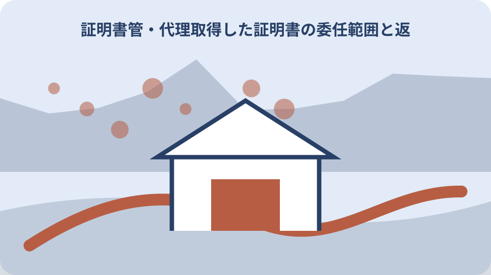
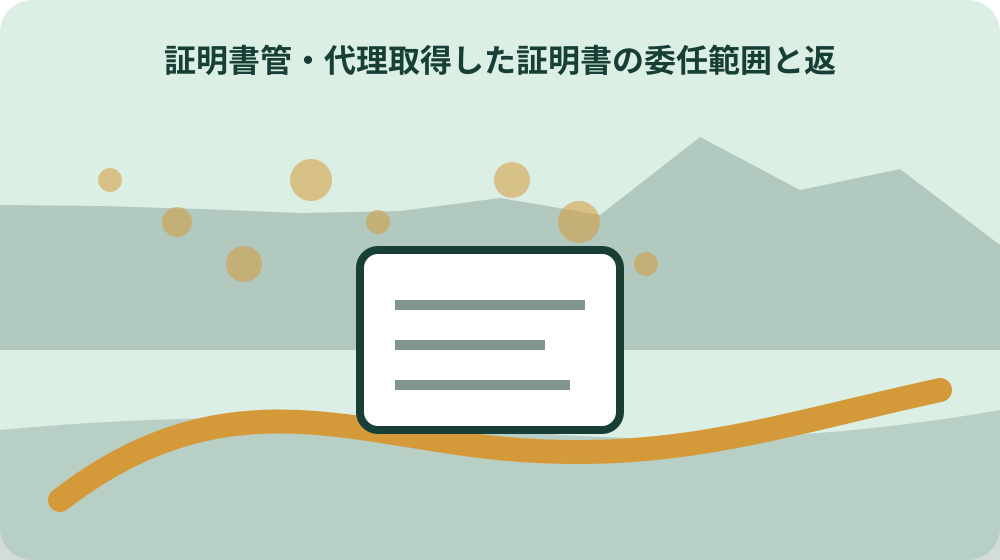

先に結論を確認する
この記事の答え：住民票では住民登録上の同一世帯なら省略できますが、別世帯なら同居でも必要です。証明書ごとに確認します。
森町で最初に照合する条件：同居かどうかではなく、住民登録上の同一世帯か別世帯かを先に確認する。
代理取得する証明書名を先に確定する
森町は戸籍・住民票・住所異動用と印鑑登録用の委任状を別様式で公開している。代理人へ頼む前に、住民票の写し、印鑑登録、印鑑登録証明書など手続名を確定する。印鑑登録を新たに行う依頼と、登録済みの印鑑について証明書を取る依頼は別工程なので、同じ「印鑑関係」にまとめない。住民票では本人、同一世帯員、別世帯代理人の区分を確認し、別世帯なら委任状と代理人の本人確認書類を準備する。印鑑登録証明書では登録証の持参、代理登録では登録する印鑑、委任状、代理人の印鑑と照会書の郵送工程を確認する。県税証明では県の委任状要件と交付窓口を調べる。手続ごとに請求資格、様式、持参物、即日可否、手数料、受渡し先を一列ずつ埋めてから代理人へ渡す。これにより同じ代理取得でも条件が異なることを依頼時点で見える形にできる。
委任記録には対象者、証明書名、必要通数、使用目的を一件ずつ書く。「役場の証明を一式」とまとめると、町が分けている様式や本人確認条件を照合できない。提出先が複数なら、同じ証明書でも使用先ごとに必要通数を確認する。交付後は一通ごとに提出先、本人返却、未使用のいずれかを付け、合計を交付通数と合わせる。印鑑登録証のような預かり物は証明書通数へ含めず別の返却欄で追う。
県税の納税証明書は県の窓口、市町村民税・固定資産税・軽自動車税等は市町村側と交付先が異なる。税証明も税目と交付主体まで特定する。提出案内の税目名と年度を一字ずつ照合し、県窓口か森町窓口かを決めてから、それぞれの委任状要件と本人確認物を確認する。交付主体と証明対象の税、年度、通数も受渡し表へ残す。
確認順は提出先が求める証明名と年度、交付主体、請求資格、委任状様式、通数である。住民票、印鑑登録証明書、納税証明書を一枚の依頼票へまとめても、各手続の確認欄は分け、公式ページも個別に対応させる。提出先から届いた案内の名称を起点にし、森町または静岡県の公式ページで同名の手続を探す。名称が一致しない場合は、用途だけから近い証明書を代理人が選ばず、提出先へ必要な証明内容を聞き直す。
同一世帯と別世帯を住民登録で確認する
住民票の写しは本人、同一世帯員、委任状を持つ人が請求できる。同居という生活上の状態だけで委任状の要否を決めず、住民登録上の世帯が同じかを確認する。
同居していても住民登録上の世帯が別なら、代理請求には委任状が必要である。一方、同一世帯員が住民票の写し等を取る場合は委任状を省略できる。
受付前の記録には、本人、同一世帯員、別世帯の代理人のどれに当たるかを残す。家族関係の呼称だけで分類せず、今回の住民登録上の関係で判断する。
世帯区分を確認した日と確認した相手を委任記録へ書き、同居家族という理由だけで委任状を省略しない。別世帯なら委任者本人が記入した委任状と代理人の本人確認書類をそろえ、窓口へ行く前に不足を照合する。同じ住所に二つの世帯が登録されている場合もあり得るため、住所の一致は同一世帯の証明にしない。委任状を省略する場合は、同一世帯員として請求したことを受渡し表へ残す。
委任者が指定した範囲と通数を写す
代理人が取得する範囲は、委任者が委任状に示した手続と通数に限定する。住民票一通を頼まれた記録を、戸籍や印鑑証明まで取れる包括的な依頼として扱わない。
受渡し表には、委任状へ記載した証明書名、対象者、通数をそのまま写す。窓口で内容を変更した場合は、変更理由と委任者へ確認した方法を別欄に残す。
取得後は交付物の名称と枚数を委任記録へ照合する。請求通数、交付通数、委任者へ返した通数の三つを分け、途中で使用した原本がある場合は使用先を記す。確認日も各行へ付ける。
委任状の範囲を変える必要が出たら、窓口で代理人だけが追加を決めず委任者へ戻す。変更前の依頼内容、委任者が確認した変更内容、新しい通数を時系列で残し、最終的な交付枚数と一致させる。対象者が複数いる場合も一人ごとに行を分ける。誰の何の証明を何通という三点を固定すると、受領後に別人分の原本を誤って提出することを防ぎやすい。

住民票用と印鑑登録用の様式を分ける
森町の公開様式では、戸籍・住民票・住所異動用の委任状と、印鑑登録用の委任状が分かれている。ファイル名と更新日を確認してから印刷する。以前の申請から複写する場合は、対象者、代理人、手続、通数のすべてを今回分として確認し、古い日付を残さない。
住民票の代理請求と、代理人による印鑑登録は必要物も進行も異なる。前者の委任状を後者へ転用せず、手続ごとの公式ページと様式を対応させる。
記録には使用した様式名、取得元URL、印刷日を残す。古い保存版がある場合も、提出直前に森町の申請書ページで現行様式を確認する。
書類準備では手続名を確定し、森町の申請書ページで対応する様式を開き、委任者が記入し、代理人の持参物と組み合わせる。印鑑登録用と住民票用のファイルを同じ名称で保存しない。印刷後は様式の表題と委任する手続を読み合わせ、未記入欄を代理人判断で補わない。戸籍と住所異動も同じ公開ページにあるため、対象外の欄へ印を付けた版を控えにする。
代筆用委任状を使う条件を窓口確認する
森町は通常の委任状とは別に代筆用の委任状も公開している。代筆が必要という事情だけで通常様式へ代理人が記入せず、代筆用様式の対象と記入方法を町へ確認する。
確認記録には、対象手続、確認日、住民係へ尋ねた事項を記す。誰がどの欄を記入し、委任者の意思をどのように示すかは、公式様式の案内に従う。
代筆用を使った場合は通常様式と混在させず、使用した版を控えとして特定する。代筆者と窓口へ行く代理人が異なる場合も、役割を記録上で分ける。
通常様式が使えない理由、町へ確認した内容、代筆者、委任者、代理人を別欄にする。代筆者が委任の範囲まで独自に決めたように見えないよう、委任者の意思確認方法は町の案内に沿って記す。森町が通常版と代筆版を別に公開している事実と、今回どちらを選ぶかの個別判断を分ける。記入前に住民係へ対象手続と事情を伝え、確認した記入順を控える。
代理人の本人確認書類を記録する
別世帯の代理人が住民票を請求するときは、委任者が記入した委任状と代理人の本人確認書類を用意する。委任者の書類だけで代理人確認が終わるとは扱わない。
森町の案内では、写真付き書類群から1点、または写真なし書類群から2点で本人確認を行う。持参物一覧には一点方式か二点方式かを書き、原本の有効期限を確認する。
記録へ本人確認書類の番号や画像を必要以上に複製せず、提示した書類種別と確認結果だけを残す。保管が不要な個人情報は受渡し完了後も抱え込まない。
写真付き1点か写真なし2点かを選んだ後、原本、有効期限、氏名表記を窓口前に確認する。本人確認書類は委任状の代わりではなく、委任状は代理人本人の確認書類の代わりではないため、二つの役割を分ける。持参物一覧では、委任者が作る物、代理人が持つ物、窓口で交付される物の三群にする。写真なし書類が一種類しかない場合は二点条件を満たさないため、出発前に組合せを見直す。
住民票の記載項目と用途を対応させる
住民票は提出先が求める記載項目を先に確認する。世帯全員か一部か、必要通数、提出先を委任者と合わせ、交付後に不足が判明して再取得する事態を避ける。
代理取得の記録では、証明書の内容そのものと受渡し情報を分ける。用途、提出先、取得日、通数は残しても、住民票に載る個人情報を管理表へ全文転記しない。
郵送請求を選ぶ場合、森町は返送先を現住所と案内している。代理人宅など任意の返送先を前提にせず、申請方法と返送条件を公式ページで確認する。
住民票の郵送請求手数料は一通300円で、定額小為替を用意する案内である。窓口での代理取得記録と郵送請求記録を分け、請求日、発送日、返送先、受領日、手数料の支払方法を対応させる。提出先が求める住民票の記載項目は、町の請求資格とは別の確認事項である。用途の確認、必要項目の確認、委任状、本人確認、受領後の照合という順で進める。
印鑑登録証と印鑑証明を混同しない
印鑑登録証明書の請求には、登録済みの人の印鑑登録証を持参する。登録する印鑑、印鑑登録証、交付された印鑑登録証明書は別物として受渡し表へ記す。委任状だけで証明書を請求できると決めず、森町ページの持参物を今回の依頼票へ写す。
森町の印鑑登録証明書交付手数料は300円である。住民票の郵送請求も一通300円の案内だが、同額だからといって同じ申請方法や必要物とは扱わない。
印鑑登録証を預かった場合は、預かった日、代理人へ渡した日、本人へ返した日を記録する。証明書原本の返却先と登録証の返却先を別欄にする。
交付手数料300円の領収記録も証明書通数と対応させる。登録証は次回も使用する物、証明書は今回交付された原本なので、受渡し終了時に登録証の所在と証明書の提出先をそれぞれ確認する。登録する印鑑は登録手続、印鑑登録証は証明書請求に関係する。三つの名称を省略して「印鑑」とだけ書かず、預かり物と交付物の種別を一行ずつ記録する。
即日完了しない印鑑登録の日程を残す
代理人による印鑑登録には、登録する印鑑、委任状、代理人の印鑑が必要である。印鑑登録証明書の交付だけを頼む場合と、登録自体を代理で行う場合を区別する。
代理人による登録は、窓口で仮登録した後に照会書を住民登録地へ郵送するため、その場では完了しない。仮登録日を証明書取得日として記録しない。
日程表には仮登録、照会書の受領、回答、登録完了、証明書請求を別工程で置く。提出期限がある用途では、郵送期間を含めて間に合うか先に確認する。
代理登録を始める前に、登録する印鑑、委任状、代理人の印鑑を確認し、仮登録後は照会書の発送先が住民登録地であることを共有する。照会書が届く前に証明書を受け取れる日程を組まない。提出期限から逆算するときは、仮登録日だけでなく照会書の郵送、本人側の回答、登録完了、証明書交付の全工程を置く。即日交付を前提にした予約日は設定しない。

県税と町税の証明窓口を分ける
静岡県の一般用納税証明書を本人以外が請求する場合は委任状が必要である。森町の住民票用委任状を県税証明へそのまま使えるとは判断しない。県の申請案内で委任状要件、窓口、対象年度を確認し、町発行の証明書と交付主体を混同しない。
静岡県は、県税と、市町村民税・固定資産税・軽自動車税等で交付先が異なると案内している。必要な税目、年度、証明内容を確定してから窓口を選ぶ。
税証明の管理欄には、県税か町税か、税目、年度、必要通数、交付窓口を書く。名称が似ていても提出先が求める証明内容と一致しなければ取り直しになる。
静岡県の一般用納税証明書では本人以外の請求に委任状が必要という条件を先に確認する。その後、必要税目が県税か町側の税かを分け、該当する公式窓口の申請条件と本人確認物を調べる。固定資産税を県税窓口へ、県税を森町窓口へ持ち込むような交付主体の逆転を防ぐため、税目の正式名と納付先を提出案内から照合する。年度も省略しない。
受領した原本の枚数と返却日を記録する
代理人が窓口で受け取った時点で、証明書名、対象者、発行日、通数を請求記録と照合する。封入されている場合は、開封権限を委任者へ確認してから枚数確認の方法を決める。
原本を提出先へ直接渡すなら、委任者へ返す場合と経路が異なる。受領者、受領日、提出先、返却不要となった根拠を一件ずつ記し、口頭の「渡した」で終えない。
余った原本、印鑑登録証、本人確認用に預かった物は別々に返却確認する。返却日と受領確認を残し、コピーが残る場合は保管先と終了日も決める。
受渡し表は請求、交付、使用、返却の四段階に分ける。たとえば三通請求し二通を提出、一通を本人へ返した場合、各原本の行へ提出先または返却先を記し、合計三通になることを確認する。印鑑登録証のような預かり物は交付原本の通数へ含めない。代理人から提出先へ直送した場合も、本人へ手渡していないだけで、受領者と日付は記録する。
大石の視点：証明書の写しを無期限に残さない
公的資料で確認できるのは請求資格、委任状、本人確認、手数料などの交付条件である。証明書名、通数、用途、受渡し日だけを残し、全面の写しを無期限に抱えない方法は、個人情報を増やさないために大石が勧める管理方法である。
提出先が写しの保管を求める場合は、その根拠、保管者、保管場所、終了日を決める。家族間の共有フォルダーへ無期限に置かず、目的が終わった時点で削除または返却を確認する。
委任状の控えも同様に、対象手続が完了した日と保管終了日を対応させる。受渡し表だけ残す場合は、個人情報を最小限にしつつ、誰が何を何通受け渡したかを追える形にする。
大石の私見では、全面コピーより受渡し履歴を残す方が目的に合う。請求条件や手数料は公的資料で確認できる事実、写しの保管範囲と終了日を絞る方法は大石の提案として分け、提出先の保存要件があればそちらを優先する。保管表には証明書名、保管理由、保管者、終了日、処分確認日を置く。委任状、本人確認書類の写し、交付証明書で必要性が異なるため、一律の無期限保存にしない。